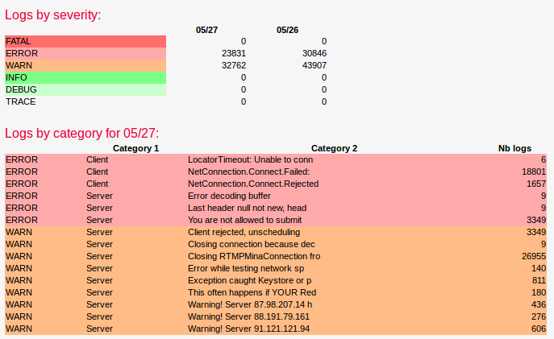
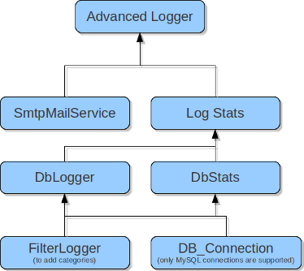

The Advanced Logger is a package enabling you to analyse your logs easily. It provides ready to use stats and can send those stats via mail once a day.
Below is a sample output of typical log stats screen.
When your application starts to grow, the logs will start filling very quickly. You might have 10 messages adding in your logs every second. Keeping track of what is important and what is not becomes challenging. And if an interesting log message is hidden in a flow of thousands of not so interesting messages, you will certainly miss it. This is where the Advanced Logger becomes useful.
As you can see on the screenshot, the advanced logger will break the log messages into categories and will display stats about those categories. In a glimpse, you can see what is going on on your server, and the numerous log messages are no more poluting the more seldom log messages.
So you should use the advanced logger if you start to feel that your logs are being useless because you have too much traffic on your website.
The first step is to install the AdvancedLogger package. If you start from a fresh Mouf install, Mouf will install all the dependencies. Amongest other things, you should be asked to:
Once everything is set-up, you should have a number of new instances created. The logger you should use to store things in database is the "dbLoggerWithCategories" (you can/should rename that if you want). You use this instance the same way you use any logger instance. Here is an exemple:
// Log an error message
Mouf::getDbLoggerWithCategories()->error("This is my error message");
// Log an error message and attach an exception
Mouf::getDbLoggerWithCategories()->error("This is my error message with an exception attached", $e);
// Log a "fatal" message directly from the exception
Mouf::getDbLoggerWithCategories()->fatal($e);
// Log a "warn" message
Mouf::getDbLoggerWithCategories()->warn("This is a warning message");
// Log an "info" message
Mouf::getDbLoggerWithCategories()->info("This is an info message");
...
Using the Advanced Logger is fairly straightforward. All you have to do install the package and start using the logger.
The Advanced Logger itself is not doing much, but it is relying on a lot of packages to provide those useful stats:
